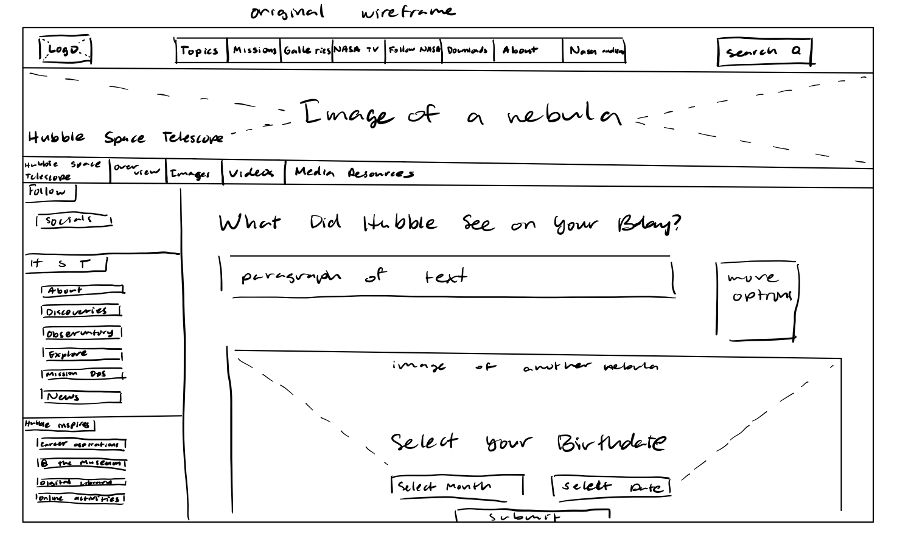
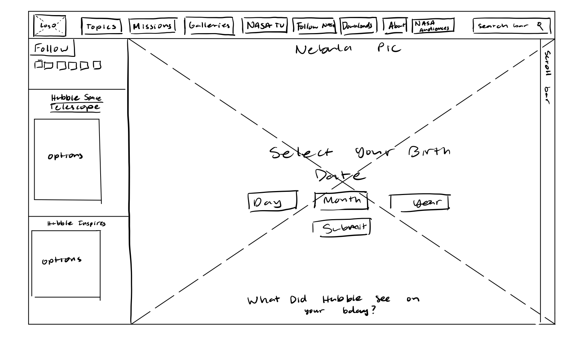

-
Using the favorite website you chose in homework 1, create a wireframe for one page of it using pen/paper, PowerPoint, or any your tool of choice. (use the 'img' tag!) Make sure to let us know what the name of your website is (Use the 'p' tag!)

-
Try to improve the website you've chosen, and create a redesigned wireframe of one page for the same website using the principles of visual hierarchy that you learned from the article.

-
What is the goal of the website? Who is it intended for? How does the design accomplish this? Write 2-3 sentences answering these questions. (Use the 'p' tag again!)
The goal of the website, ultimately, is to get people to explore and see what picture the Hubble Telescope took on a certain day. They accomplished this by letting people have the option to set a month and day however they wanted. The design allows for this by letting these options be in the middle and the largest element in the page.
-
Write 2-3 sentences about what problems your redesign addressed, and how it solved them.
For me, it felt that the main goal was a little too tiny, so I tried to make the day, month, and year options larger and take up the whole page so as to attract people there immediately. According to the article, people will scroll most of the time, so I decided to put the description and other links from Hubble towards the bottom. It also feels more natural that the description is at the bottom of a page rather than towards the top. This lets the reader not get distracted from the main focus of the page.
NOTE: Make sure to include the wireframe images in the website and don't just put it in your assets folder!
Your wireframes should look something like this: